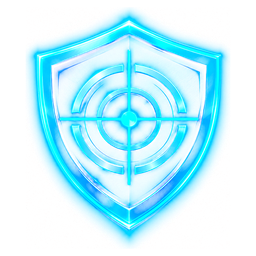

PRISM TRACEA free, local-first workstation for ethical investigators. Search several clues at once, read photo metadata, audit a domain, survey Wi-Fi and watch the world. No login. No cloud.
Everything runs on your computer. Results show their sources and never claim more than the evidence supports.
Email, phone, username and name in one scan, with guessed usernames labelled as guesses.
Camera data, GPS, hashes, edit-detection hints, photo comparison and a chain-of-custody log.
DNS, TLS, security headers, subdomains and an A to F grade. Passive unless you confirm authorization.
Confirmed links are solid, possible links are dashed. Export as PNG or SVG.
Save cases locally. Export PDF, JSON or CSV.
Private summaries from your own Ollama model.
Nearby Wi-Fi with security ratings, open networks flagged, IP lookup.
Live map of conflict news, earthquakes and natural events, plus outbreaks, markets and exploited vulnerabilities.
Password breach check, hashes, encoders, JWT decoder and a password generator.
Optional VirusTotal, Shodan, HIBP, WhoisXML and AbuseIPDB keys, tested for real.
Any mix of email, phone, username, domain or photo.
Cards, a relationship graph and a plain-language summary.
Keep the case in a local vault and export a report.
Free and open source.
1. Open the web version of Prism Trace in Safari.
2. Tap the Share button.
3. Tap Add to Home Screen. It opens full screen like an app. Android: open it in Chrome and tap Install app.
Unsigned apps show a warning on first launch. On Windows choose "More info" then "Run anyway".
No. Prism Trace compares pictures and reads metadata. It does not recognize or identify faces.
Cases and files stay local. Lookups contact the public services you use, such as breach and profile checks.
Use it only on targets you own or are authorized to investigate. It only reads public data and never attacks anything.
Prism Trace was engineered by an independent, anonymous cybersecurity researcher from Pakistan, dedicated to advancing national and global capabilities in Open-Source Intelligence (OSINT), network defense, and digital forensics to protect digital infrastructure and raise Pakistan’s name in the global cybersecurity community. Contact: Instagram @phasmakernel.